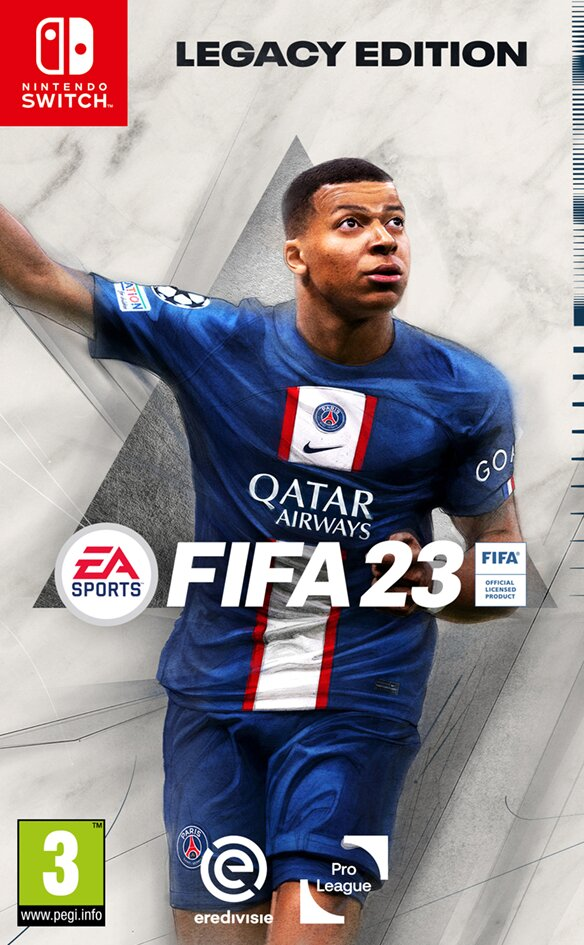
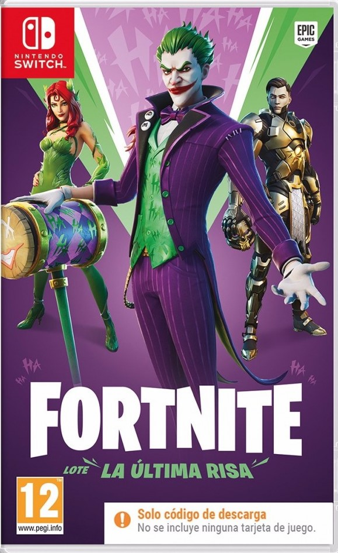
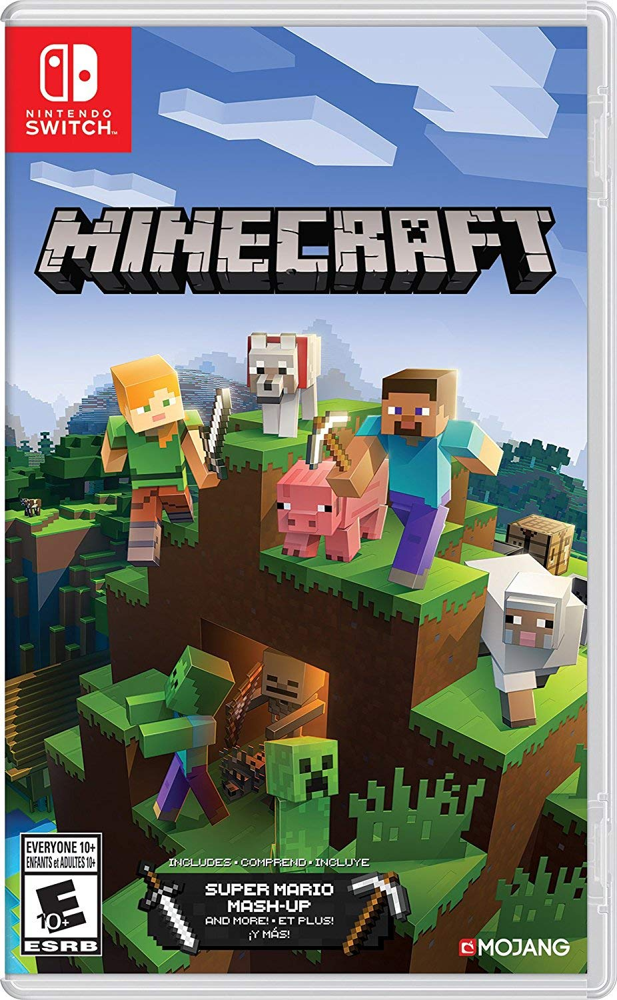

| Fifa. | Fall Guys. | Fortnite. | Minecraft. |
|---|---|---|---|
|
'Fortnite' está perfectamente optimizado a las características técnicas de la plataforma de Nintendo. Esto hace que, a pesar de contar con 30 fotogramas por segundo y unas texturas de inferior calidad a las de PlayStation y Xbox, el juego se vea más fluído e incluso con más calidad que en determinadas configuraciones de ordenadores y móviles de gama media. |
Las características únicas de Switch la convierten en la plataforma ideal para aquellos que quieran llevar toda la libertad de acción de Minecraft a cualquier parte. De hecho, de todas las versiones portátiles (como la de Vita o la Pocket Edition para teléfonos móviles) esta es con diferencia la mejor, con una resolución de 720p y 60fps constantes... cuando jugamos en solitario. |
||
|  |  |
 |  |